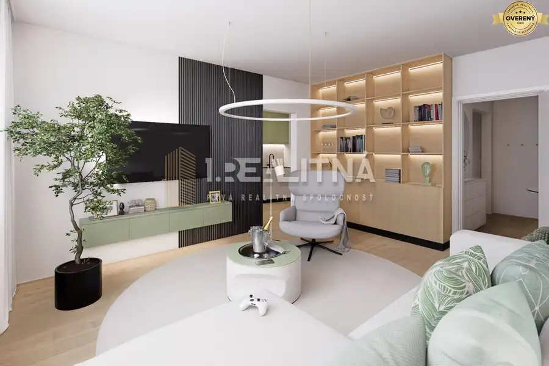

Moderný dvojizbový byt, 37m2, Dúbravka
Dúbravka, Bratislava
- Dispozícia2-izbový
- Plocha37 m²
- Poschodie8. z 14
- Stavúplne prerobený
- Vlastníctvoosobné
- Energetická triedaA
O nehnuteľnosti
Predávame krásny 2-izbový byt v Dúbravke – na ulici Drobného 24. Byt vás zaujme najmä svojou rekonštrukciou, pri ktorej vznikla z jednoizbového bytu dispozícia dvojizbového bytu s prepojenou obývaciou izbou s kuchyňou.
Nehnuteľnosť sa nachádza na 8. poschodí z 14 v zateplenom panelovom bytovom dome s 3 výťahmi. Dispozične pozostáva z obývacej izby s kuchyňou, samostatnej menšej spálne, kúpeľne so sprchovým kútom, WC a vstupnej chodby.
3D obhliadka nehnuteľnosti: https://lnk.sk/nxivz
VÝHODY KÚPY TEJTO NEHNUTEĽNOSTI:
- osobné vlastníctvo o výmere 37m2 (aj s 1 pivnicou)
- južná orientácia
- kompletná rekonštrukcia
- vymenené plastové okná
- nová elektroinštalácia
- nové stierky v celom byte
- znížené stropy
- bezpečnostné dvere
- kuchynská linka na mieru s umývačkou, varnou doskou, digestorom, el. rúrou
- nové stúpacie rozvody
- kompletne prerobená kúpeľňa s novou sanitou a sprchovým kútom (murované jadro)
- nové laminátové podlahy
- predáva sa zariadený (po dohode s novým majiteľom)
- k dispozícii aj dve klímy (po dohode s novým majiteľom)
- vstavané skrine na chodbe
- pivnica, kočikáreň a spoločný priestor
- bytový dom prerobený, vymaľované spoločné priestory s novou sanitou, nové schránky a výťahy
- nízke mesačné náklady 145eur do bytového spoločenstva + elektrina
Byt sa nachádza v tichej a zelenej časti Dúbravky s kompletnou občianskou vybavenosťou v pešej dostupnosti. V okolí nájdete obchody ako Lidl či BILLA, školy, škôlky aj športoviská. Výbornú dostupnosť zabezpečuje električková zastávka Drobného s rýchlym spojením do centra mesta. Lokalita ponúka aj množstvo zelene a oddychových zón, napríklad Park Družby či lesy Devínskej Kobyly ideálne na šport a prechádzky.
Neváhajte a dohodnite si obhliadku ešte dnes – takáto ponuka sa dlho neohreje!
Parametre
| Úžitková plocha | 37 m² |
|---|---|
| Poschodie | 8/vyššie poschodie |
| Počet poschodí | 14 |
| Vlastníctvo | osobné |
| Stav | úplne prerobený |
| Postavené z | panel |
| Energetický certifikát | A |
| Dátum zverejnenia | 1. 6. 2026 |
Kde to je
Mohlo by Vás zaujímať
 Nebytové priestory10
Cena dohodouPriemyselný areál (tri haly, recepcia, kancelária, garáže, logistika)
Banská Bystrica
1260 m²1. podlažie
Prvá realitná spoločnosť predáva priemyselný areál vhodný na multifunkčné využitie so skvelou logistickou dispozíciou blízko centra mesta Banská…
Nebytové priestory10
Cena dohodouPriemyselný areál (tri haly, recepcia, kancelária, garáže, logistika)
Banská Bystrica
1260 m²1. podlažie
Prvá realitná spoločnosť predáva priemyselný areál vhodný na multifunkčné využitie so skvelou logistickou dispozíciou blízko centra mesta Banská…
 Byt10
310 000 €Moderný 3-izbový mezonet v novostavbe rodinného domu
Podunajské Biskupice, Bratislava
3-izbový68 m²
Prvá realitná spoločnosť predáva časť dvojpodlažného rodinného domu v Podunajských Biskupiciach s dvoma parkovacími miestami, záhradkou a terasou.…
Byt10
310 000 €Moderný 3-izbový mezonet v novostavbe rodinného domu
Podunajské Biskupice, Bratislava
3-izbový68 m²
Prvá realitná spoločnosť predáva časť dvojpodlažného rodinného domu v Podunajských Biskupiciach s dvoma parkovacími miestami, záhradkou a terasou.…

Byt10 229 000 €4 izbový byt s loggiou, Pavla Horova, 82 m2 Devínska Nová Ves, Bratislava 4-izbový82 m²2. podlažie Ponúkame Vám exkluzívne na predaj nadštandardne priestranný 4 izbový byt o výmere 82 m² na ulici Pavla Horova v Devínskej Novej Vsi, situovaný na 2.…